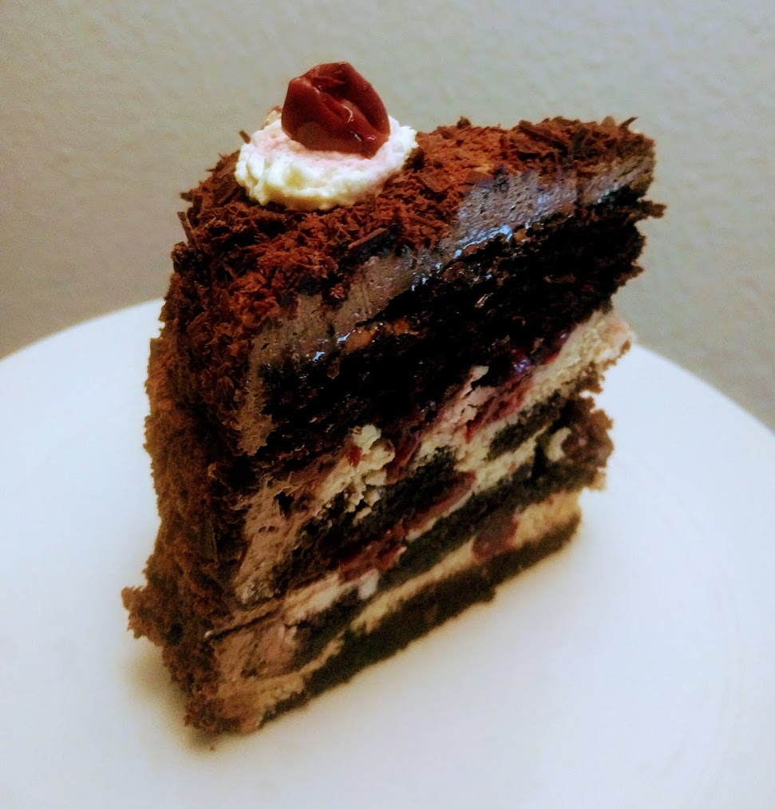

Portal cake

Pour 16 parts, facile:
- Un demi-litre de crème liquide entière
- 450g de sucre glace
- 360g de babeurre
- 330g de sucre en poudre
- 250mL de kirch
- 110g de beurre (ramolli)
- 220g de farine
- 110g de margarine (ramollie)
- 100g de cacao en poudre
- 50g de chocolat noir
- Trois sachets de sucre vanillé
- Deux œufs
- Deux boîtes de cerises dénoyautées
- Une petite cuillère à soupe de bicarbonate de soude
- (Facultatif) Une cuillère à soupe de thé ou de café
- Sel
- Dans un bol, mélanger la farine, deux tiers du cacao en poudre, le bicarbonate de soude, et une bonne pincée de sel.
- Dans un gros saladier, mélanger la margarine, le sucre en poudre, et deux sachets de sucre vanillé, jusqu'à ce que ça soit bien crémeux. Ajouter les œufs, remélanger.
- Faire préchauffer un four à 175°C. Ajouter le mélange poudreux dans le mélange crémeux, en alternant avec le babeurre, en mélangeant en permanence. Il faut ça soit bien homogène.
- Faire cuire la moitié de la pâte dans un moule rond (et bien beurré, ou recouvert de papier sulfurisé) d'environ 20cm de diamètre, pendant une bonne demi-heure, jusqu'à ce qu'un couteau planté dedans ressorte sec. Le moule doit avoir des bords suffisamment hauts pour ne pas que ça déborde.
- Démouler, laisser refroidir, et faire la même chose avec l'autre moitié du gâteau. Idéalement, si on a deux moules de la même taille, on peut paralléliser la cuisson des gâteaux =]
- Pendant ce temps, battre le beurre en crème (comme pour l'étape précédente, ça aide beaucoup d'avoir un batteur électrique qui puisse aller lentement). Ajouter le sucre glace progressivement, puis le thé, et un peu de sel. Si c'est très solide, on peut rajouter un peu de jus de cerises.
- Couper les deux gâteaux en deux horizontalement, pour obtenir 4 tranches de gâteau. Puis, former le gâteau : sur un gros plat rond, poser une tranche de gâteau. Verser 60mL de kirch dessus, un peu partout. Puis, étaler le tiers de la crème obtenue à l'étape précédente. Poser la seconde tranche de gâteau, verser 60mL de kirch, puis la crème, un tiers, et recommencer jusqu'à la quatrième tranche (que l'on recouvre de kirch, comme les autres). Réserver les huit cerises les plus jolies pour la décoration.
- Mettre la crème liquide à refroidir un bon quart d'heure au congélateur. Pendant ce temps, râper le chocolat.
- Battre la crème liquide en chantilly jusqu'à ce qu'elle soit bien solide. Réserver deux cuillères à soupe de chantilly à part, pour la décoration. Dans le reste, ajouter le reste de cacao en poudre, une cuillère à soupe de kirch, et un sachet de sucre vanillé.
- Glacer le dessus et les côtés du gâteau avec la chantilly au cacao, pour qu'on ne voit plus les différentes couches. Recouvrir avec le chocolat râpé — c'est facile à faire sur le dessus, beaucoup moins sur les côtés. Il faut y aller doucement, du bout des doigts, en s'attendant à en mettre de partout.
- Finir la décoration : mettre le reste de chantilly dans une poche à douille et former huit petits tas, et mettre une cerise sur chaque.
- Préférablement, laisser refroidir un peu le gâteau au frigo, pour qu'il se solidifie un peu. On peut facilement le laisser une nuit.
Remarque : ce gâteau est délicieux, et il est aussi très riche. Le couper en
parts bien fines, en 16 grand minimum.

Retour à la liste des recettes